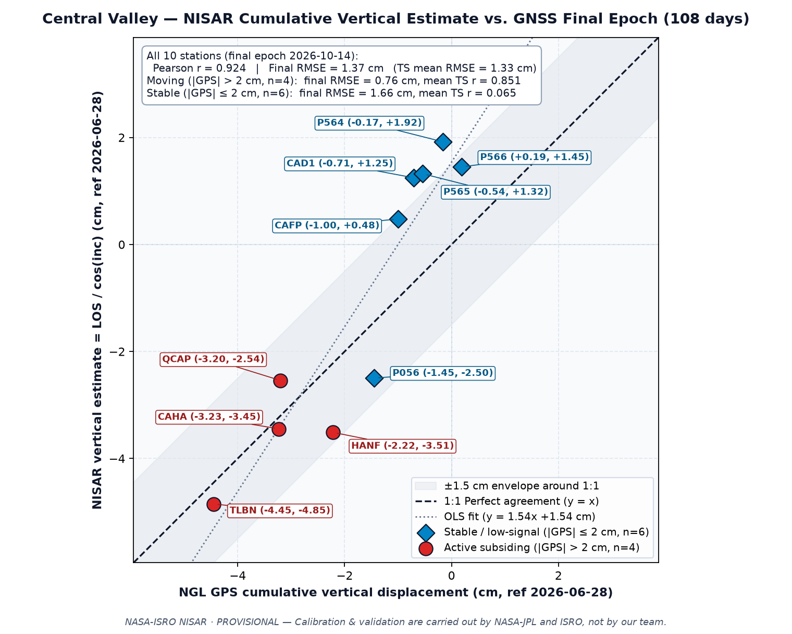
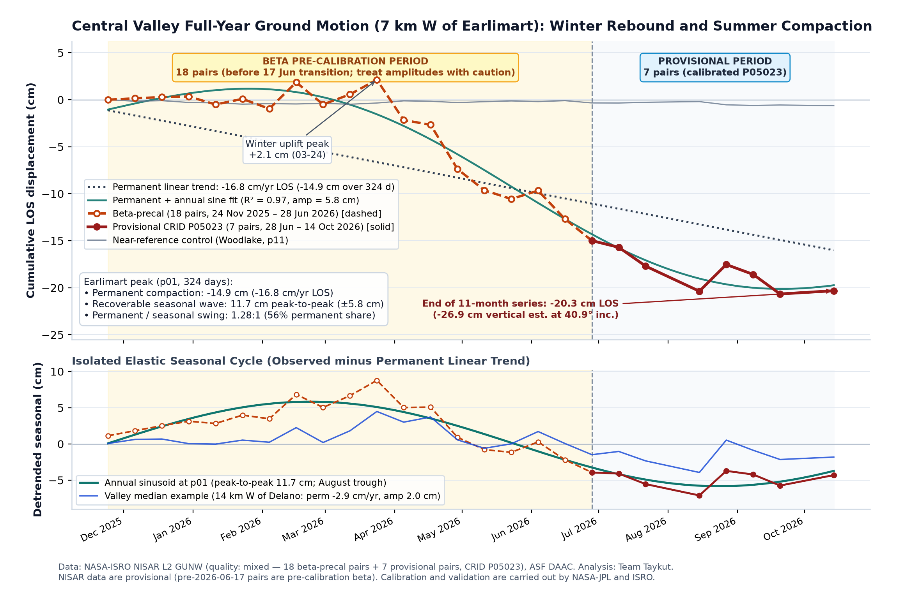

Tracking Agricultural Ground Subsidence, Infrastructure Tilt, and Karst Stress with Provisional NASA–ISRO NISAR L-Band Interferometry
beta granules (< 2026-06-17) are isolated in explicit mixed full-year datasets and excluded from provisional summer headlines.
GUNW, CRID P05023) and Geocoded Polarimetric Covariance (GCOV) products, we built a reproducible processing and infrastructure-risk pipeline for pumped agricultural aquifers and sinking cities. After split-spectrum ionospheric subtraction, elevation-aware planar deramping, coherence masking (≥ 0.30), and 1 km (13×13 pixel) block-median aggregation, provisional 108–120 day summer chains measure peak Line-of-Sight (LOS) sinking of −7.8 cm in California's Central Valley (239.54 km² ≤ −5 cm), −5.9 cm in Karapınar (−9.6 cm across the full Konya Closed Basin), −1.3 cm in the Sacramento–San Joaquin Delta, and −6.8 to −1.4 cm across Mexico City, Tehran, Jakarta, and Beijing. Cross-comparison against 10 continuous Nevada Geodetic Laboratory GPS stations gives a final cross-station correlation of r = 0.924 (1.00 cm median time-series RMSE), while London clay returns below_detection (3σ = 3.62 cm).
1. Data & Product Maturity Taxonomy
Every reported metric maps deterministically to versioned JSON contracts in data/ and is tagged by NISAR maturity class (provisional from 2026-06-17 onward, mixed where winter beta pairs precede summer provisional pairs, preview for same-day GCOV browse imagery, and reference for peer-reviewed sinkhole coordinates).
| Dataset | Sensor / Product | Period (Pairs) | Track / Frame | Quality | Role |
|---|---|---|---|---|---|
data/central_valley/ | NISAR L2 GUNW (P05023) | 2026-06-28 → 2026-10-14 (7, 108 d) | T34 Asc., F20 | provisional | Summer compaction & canal tilt |
data/central_valley/ (desc.) | NISAR L2 GUNW (P05023) | 2026-06-28 → 2026-10-14 | T114 Desc. | provisional | Dual-orbit check & E+U inversion |
data/central_valley_fullyear/ | NISAR L2 GUNW | 2025-11-24 → 2026-10-14 (25, 324 d) | T34 Asc. | mixed | Seasonal vs. permanent decomposition |
data/delta/ | NISAR L2 GUNW (P05023) | 2026-06-17 → 2026-10-15 (9, 120 d) | T42 Desc., F69 | provisional | Handbook Fig. 2-4 Delta levees |
data/karapinar/ & konya_plain/ | NISAR L2 GUNW (P05023) | 2026-06-26 → 2026-10-12 (8, 108 d) | T7 Desc., F69 | provisional | Karapınar sinkholes & full Konya Basin |
data/karapinar_fullyear/ | NISAR L2 GUNW | 2025-10-17 → 2026-01-09 (6) | T7 Desc. | mixed | Early winter pre-cal baseline |
data/uk_clay/ | NISAR L2 GUNW (P05023) | 2026-06-21 → 2026-10-19 (9, 120 d) | T101 Asc., F28 | provisional | London clay negative control |
data/fens/crops.json & uk/ | NISAR L2 GCOV + VIIRS | 2026-06-22 → 2026-10-20 | UK Fens (4 fields) | provisional / preview | HH/HV crop curves & cloud-free check |
data/global/* (4 cities) | NISAR L2 GUNW (P05023) | 2026-06-17 → 2026-10-20 (8–9) | City frames | provisional | Mexico City, Tehran, Jakarta, Beijing |
data/central_valley_s1/ | OPERA DISP-S1 + NGL + NISAR | S1 ends 2026-04-26 vs. summer | Tulare core | mixed | L-band vs. C-band cross-sensor test |
2. Methods
Each 80 m GUNW unwrappedPhase grid (Δφ) is converted to LOS displacement via the granule's exact center wavelength λ = c / f0 (λ = 24.20 cm; full 2π fringe 12.10 cm; half-cycle limit 6.05 cm):
Pixels with coherenceMagnitude < 0.30 or connectedComponents == 0, islands < 200 pixels (~1.3 km²), and unwrapping outliers exceeding λ/4 from the 720 m local median or > 15.0 cm are masked (analysis/insar.py). Because default GUNW products do not subtract atmospheric screens, analysis/cumulative.py subtracts the shipped split-spectrum ionospherePhaseScreen (2.93–17.26 cm p1–p99 dispersion per pair) and fits a joint planar plus Copernicus DEM trend over stable reference patches. Cumulative chains use overlap-weighted stacking aggregated into 1 km (13×13 pixel) block medians (≥ 50% valid, std ≤ 2 cm). Pure vertical estimates scale by Δz ≈ ΔrLOS / cos θ; where Track 34 Asc. and Track 114 Desc. overlap (49.6%), two-geometry least squares separates East and Up components (vertical.json). For the 25-pair Earlimart series, harmonic + linear regression separates permanent secular rate from seasonal amplitude (R² = 0.97).
3. Validation & Cross-Checks
- Continuous GPS (
NGL IGS20/NA, n = 10): Projected NISAR 3×3 vertical estimates correlate at r = 0.924 across final station offsets (1.37 cm final RMSE) with 1.00 cm median time-series RMSE (best 0.64 cm atP566). Across the 4 fastest-sinking interior stations (|GPS| > 2 cm:TLBN, CAHA, QCAP, HANF), final RMSE drops to 0.76 cm (r = 0.90 atCAHAandHANF). - Dual-Orbit Consistency (
Track 34 ↔ Track 114): Across6,719common1 kmblocks, both independent orbits reach r = 0.489 (0.60 local < 15 km, RMSE 2.65 cm) with 85% sign agreement where |d| > 3 cm. Two-orbit inversion at the Alpaugh/Earlimart bowl isolates −7.2 cm vertical subsidence vs. only −0.1 cm east-west motion (max −9.8 cm vertical). - L-Band vs. C-Band (
OPERA_L3_DISP-S1_V1): In the Tulare agricultural core, NISAR L-band maintains 80.4% valid pixels in summer (92.7% winter, 77.6% spring) and matches 5 core GPS stations at RMSE = 0.823 cm (r = 0.7462). Five single 12–24 d steps (−2.89 to −5.10 cm) exceed C-band's 2.77 cm fringe, and the OPERA archive (2,663 granules) ends 2026-04-26 (0 summer scenes). - London Clay Negative Control (
data/uk_clay/detection.json): Across 9 provisional Track 101 pairs (120 d), quadratic deramping leaves 97.7% of 1 km blocks within ±1.5 cm and 0 interior blocks above the 3σ = 3.62 cm threshold (status: below_detection).


4. Uncertainty & Sensitivity Budget
Cramér-Rao formal phase-noise medians (L = 208 looks) are 0.294 cm LOS (Central Valley) and 0.326 cm LOS (Karapınar). Post-deramp empirical single-pair RMS is 0.66 cm, propagating to 1.74 cm local (SNR 2.7×–4.5×) and 2.87 cm full-scene cumulative uncertainty, with zero half-cycle (≥ 6.05 cm) jumps across 24 audited points. Multi-reference stability tests across 2–3 stable patches give [−7.8, −4.7] cm (CV summer), [−20.3, −11.7] cm (CV full-year), [−14.0, −9.6] cm (Konya Basin), [−1.3, −1.1] cm (Delta), [−7.4, −4.4] cm (Mexico City), [−7.3, −3.5] cm (Tehran), and [−7.6, −1.4] cm (Beijing).
5. Multi-Region Results
| Region / Analysis | Peak LOS (cm) | Ref. Range (cm) | Vertical Est. (cm) | Key Secondary Metrics |
|---|---|---|---|---|
| Central Valley (108 d, 7 pairs) | −7.8 | [−7.8, −4.7] | −10.1 (39.1°) | 239.54 km² ≤ −5 cm; 81/645 high-risk segments (Tulare Canal 57.01, CA Aqueduct 49.12 mm/km; ±25% rank invariant) |
Central Valley Full-Year (mixed) | −20.3 | [−20.3, −11.7] | −26.9 (40.9°) | Earlimart: −16.8 ± 2.2 cm/yr permanent vs. 11.7 cm seasonal (R² = 0.97) |
| Sacramento–San Joaquin Delta | −1.3 | [−1.3, −1.1] | −1.6 (35.8°) | N = 87 OSM levee samples: p10 = −3.48 cm, local reach −11.36 cm (4.09 km) |
| Konya Closed Basin (108 d, 8 pairs) | −9.6 | [−14.0, −9.6] | −12.1 (37.6°) | South of Konya city; exposure CV+Konya > 2 cm = 141,555 est. residents |
| Karapınar Sinkhole Belt (108 d) | −5.9 | — | −8.0 (42.0°) | 29 verified sinkholes: 0–1 km −4.15 cm (6.4× >5 km −0.65 cm); p = 0.0001 perm, p = 0.0207 shifts |
| 4 Global Cities (108–120 d) | −4.4 / −3.5 / −6.8 / −1.4 | City-wide spread | −6.2 / −4.7 / −9.3 / −2.1 | Mexico City / Tehran / Jakarta (2.9% valid) / Beijing; unchanged code |
5.1 Global Subsidence Atlas (2026 Provisional Benchmark)
Running pipeline/nisarpulse/ with identical provisional-only (≥ 2026-06-17, P05023) thresholds and standardized ±0.25° boxes ranks 9 completed regions (data/global/atlas.json + data/global/isfahan/summary.json; audited in atlas_validation.md) by rate_cm_per_100d (cm / 100 days LOS)—to our knowledge, one of the first standardized multi-basin comparisons built on provisional NISAR L-band GUNW data using a single open-source pipeline. LOS & Period Caveat: all figures are Line-of-Sight (not vertical) over 108–120 summer–autumn days; atlas.json separates 5 reliable from 3 indicative only entries (and Mexico City was re-run off-basin to −7.0 cm LOS):
| Rank | Region / City | Period (n pairs, d) | Rate (cm/100d LOS) | Peak LOS (cm) | Vert. Est. (cm) | Valid Px | Atlas Tier / PC5 Gate |
|---|---|---|---|---|---|---|---|
| 1 | Konya Closed Basin, Türkiye | 2026-06-26 → 2026-10-12 (8, 108 d) | −8.89 | −9.6 | −12.1 | 11.6% | preliminary (PC5 low; pending ±0.25° box) |
| 2 | Central Valley, USA | 2026-06-28 → 2026-10-14 (7, 108 d) | −7.22 | −7.8 | −10.1 | 62.9% | reliable (10-GPS r = 0.924, Press Approved) |
| 3 | Jakarta, Indonesia | 2026-06-27 → 2026-10-13 (8, 108 d) | −6.30 | −6.8 | −9.3 | 2.9% | indicative only (low, 2.9% valid; preliminary) |
| 4 | Bangkok, Thailand | 2026-06-21 → 2026-10-19 (8, 120 d) | −6.25 | −7.5 | −9.0 | 34.6% | indicative only (low, monsoon delay; preliminary) |
| 5 | Mexico City, Mexico (off-basin) | 2026-06-22 → 2026-10-20 (8, 120 d) | −5.80 | −7.0 | −9.7 | 63.9% | reliable (medium, PC5 Press Approved; prior JPL note) |
| 6 | Karapınar, Türkiye | 2026-06-26 → 2026-10-12 (8, 108 d) | −5.46 | −5.9 | −8.0 | 14.2% | indicative only (low; PC5 Conditional on p = 0.0001) |
| 7 | Rafsanjan, Iran | 2026-06-23 → 2026-10-21 (10, 120 d) | −4.83 | −5.8 | −7.4 | 84.9% | reliable (medium, PC5 Press Approved) |
| 8 | Ho Chi Minh City, Vietnam | 2026-06-17 → 2026-10-15 (9, 120 d) | −3.50 | −4.2 | −5.8 | — | indicative only (low, tropical delta; preliminary) |
| 9 | Tehran, Iran | 2026-06-18 → 2026-10-16 (9, 120 d) | −2.92 | −3.5 | −4.7 | 35.7% | indicative only (low; preliminary, alt. ref. −7.3 cm) |
| 10 | Isfahan, Iran | 2026-06-18 → 2026-10-16 (9, 120 d) | −2.08 | −2.5 | −3.4 | 32.5% | reliable (medium, PC5 Press Approved) |
| 11 | Beijing, China | 2026-06-17 → 2026-10-15 (9, 120 d) | −1.17 | −1.4 | −2.1 | 71.1% | preliminary (PC5 low; wide ref. spread 4.43) |
| 12 | Sacramento–San Joaquin Delta, USA | 2026-06-17 → 2026-10-15 (9, 120 d) | −1.08 | −1.3 | −1.6 | 43.4% | reliable (PC5 high; Press Approved) |
6. Original Contributions (docs/OZGUN_KATKILAR.md)
- O1 — Permanent Aquifer Storage Loss (km³/yr): Integrating valid
vvert < −1.0 cm/yrpixels fromdecomp.json(4,508.29 km², mean rate 7.04 cm/yr, median 41.53° incidence,quality: mixed; USGS Circular 1182) yields 0.3174 km³/yr (317.41 million m³/yr; net basin 0.3110 km³/yr), with a 1 km block SE (±0.00123 km³/yr) and 3-reference sensitivity range of 0.0664–0.3198 km³/yr (~0.49× Millerton Lake 0.642 km³;data/central_valley_fullyear/storage_loss.json, storage_loss.md). - O2 — Probabilistic Engineering Risk (engineering_risk.md,
data/central_valley/assets_prob.json): Screens all 2,082 scoreable OSM corridors (of 3,238 inrisk/central_valley_infra.geojson) every 100 m over 100/500/1,000 m baselines via 1,000 Monte Carlo trials using PC5's Cramér–Rao formal σ (0.2943 cm median). Peak deterministic β = 0.00072276 (0/1,000exceedances of1/500or1/1,000), while 5 corridors show nonzerop(Δ > 10 cm)led by Exeter Subdivision (OSM 196530229, 12.564 cm, p = 1.000), Goshen Subdivision (9.780 cm, p = 0.600), and Friant-Kern Canal (9.880 cm, p = 0.563)—reported strictly as screening cutoffs. - O3 —
pipeline/nisarpulse/Operational CLI Engine: Packages CMR search (search.py), 20.0 GB-floored HDF5 streaming/subsetting (fetch.py),analysis/cumulative.pyprocessing (process.py), and catalog registration (catalog.py) intopython -m pipeline.nisarpulse run. Verified on Sacramento–San Joaquin Delta (9chain pairs,0gaps,quality="provisional"):1.20 sdry-run,6.9 scached--resumerun (−1.3 cmpeak LOS), and6/6unit tests passing in0.016 s(CIpytestvia.github/workflows/tests.yml;docs/story/engine.md).
7. Limitations
All core outputs depend on NASA–ISRO provisional products; full-year chains mix pre-calibration beta scenes (quality: mixed). Single-summer annualized rates overstate net annual compaction where winter recharge occurs. Moisture-driver correlation over N = 8 summer acquisitions yields non-significant pperm = 0.088/0.130 (|rcrit| = 0.707–0.754). Unmodeled single-season troposphere adds ~1 cm uncertainty; tropical vegetation reduces Jakarta to 2.9% valid pixels; static 2020–2021 WorldPop/CDL/WorldCover overlays predate 2026 crops; and regional InSAR cannot predict collapse dates of brittle limestone sinkholes.
References (All URLs Verified HTTP 200 in docs/story/sources.md)
- Peacock, A., An, K., Pinto, N., & Lou, Y. (2024). NISAR Land Subsidence StoryMap. https://storymaps.arcgis.com/stories/109e602e748346f3be8dc89124619828
- NASA–JPL NISAR Societal Benefits White Papers (Subsidence, Drought, Levees, Sinkholes, Food Security, Soil Moisture). https://science.nasa.gov/mission/nisar/societal-benefits/
- ASF NISAR L2 GUNW User Guide. https://nisar-docs.asf.alaska.edu/gunw
- Neely et al. (2021), Water Resour. Res. 57(4). https://pmc.ncbi.nlm.nih.gov/articles/PMC8047915/ · Ojha et al. (2019), JGR 124. https://pmc.ncbi.nlm.nih.gov/articles/PMC6559157/
- Orhan et al. (2021), Sensors 21(3):774. https://pmc.ncbi.nlm.nih.gov/articles/PMC7865528/ · Üstün et al. (2010), NHESS 10:1151. https://nhess.copernicus.org/articles/10/1151/2010/
- Haghighi & Motagh (2024). https://pmc.ncbi.nlm.nih.gov/articles/PMC11086625/ · Abidin et al. (2015), PIAHS 372. https://piahs.copernicus.org/articles/372/115/2015/
- Tapur & Bozyiğit (2015), Marmara Coğ. Derg. 31. https://dergipark.org.tr/tr/download/article-file/3454
- NASA SERVIR (2019), SAR Handbook Ch. 2. https://earthdata.nasa.gov/s3fs-public/2025-04/SARHB_CH2_Content.pdf · USDA NASS CDL. https://www.nass.usda.gov/Research_and_Science/Cropland/SARS1a.php